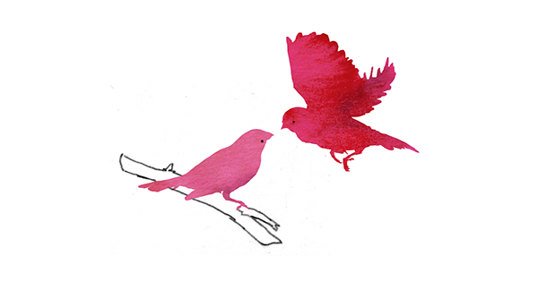
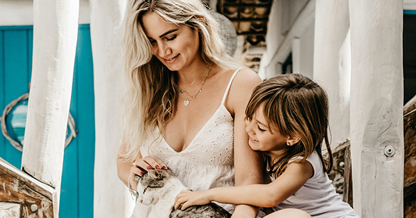
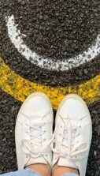

Psychologie magazine
Grid items
De 10 best gelezen artikelen van 2020
Informatie over leestijd en duur
643 woorden
4 minuten leestijd
Artikel opslaan en liken
opslaanIntrotekst
Eerlijk is eerlijk, dit jaar heeft ons flink op de proef gesteld. Gelukkig kwamen we 2020 met de nieuwste onderzoeksinzichten, verdiepende artikelen en zelfontwikkelingstesten en -trainingen zo goed mogelijk door. Daarom de tien best gelezen artikelen van dit jaar nog eens voor je op een rijtje, van 10 naar 1. Welke is jouw favoriet?
10. Het geheim van een goede relatie
Gelukkige stellen zijn niet perfect, ook zij maken ruzie. Maar volgens de Amerikaanse psycholoog John Gottman zijn er wel kenmerken waarop een goede relatie gebaseerd is. Hij betoogt waarom het cruciaal is om te weten wat de ander belangrijk vindt en te onderzoeken wat de dieperliggende oorzaak is bij (terugkerende) relatieproblemen. Dit zijn volgens Gottman de zeven pijlers voor een goede relatie.
9. 36 vragen voor je partner voor meer intimiteit
Hoe word je verliefd op iemand? Het Amerikaanse psychologenechtpaar Arthur en Elaine Aron wilde weten of twee vreemden sneller een intieme band kunnen ontwikkelen. Ze bedachten en testten een lijst met vragen als ‘Wat is je dierbaarste herinnering?’ en ‘Wanneer zong je voor het laatst toen je alleen was?’ De vragenlijst had een positief effect op de band van zowel twee vreemden, als mensen die al jarenlang een relatie hadden. Probeer het zelf uit: hier vind je het hele onderzoek over intimiteit én alle 36 vragen.
8. Gaslighting: zo herken je een gaslighter
Gebeurtenissen glashard ontkennen en gesprekken achteraf verdraaien, waardoor de ander gaat twijfelen aan zijn gezonde verstand: we hebben het over gaslighting. ‘Als je steeds denkt: “Ben ík nou gek?”, is het foute boel,’ zegt psycho-analyticus Robin Stern. Zo herken je deze subtiele vorm van manipulatie.
7. Waarom je met de één een klik hebt en met de ander niet
Dat fijne gevoel van vertrouwdheid, en dat je gespreksstof hebt voor járen. Met sommige mensen heb je een ‘klik’ – maar waar komt die aantrekkingskracht nu precies vandaan? Vijf redenen waarom het met sommige mensen simpelweg beter botert.
6. Waarom dochters niet zonder moederliefde kunnen
Als één vorm van liefde vanzelfsprekend is, dan is het moederliefde – zou je denken. Toch krijgt lang niet ieder kind wat het nodig heeft. Vooral dochters raken daardoor emotioneel beschadigd, zegt therapeut Susan Forward. ‘Het belangrijkste is loskomen van de vaak hardnekkige gedachte dat ze het gebrek aan moederliefde zélf veroorzaakt hebben, door te zijn wie ze zijn.’ Lees meer over de gevolgen van opgroeien bij een moeder die moeizaam liefheeft.
5. De cruciale rol van een vader in een meisjesleven
De relatie tussen vader en dochter is net als het lampje in de koelkast: het is er, maar we merken het niet op. Terwijl nieuw onderzoek bewijst dat de vader een cruciale rol speelt in een meisjesleven. Ontdek waarom vaders juist zo belangrijk zijn voor dochters.
4. 7 tekenen dat je slimmer bent dan gemiddeld
Natuurlijk zijn niet alle intelligente mensen hetzelfde. Toch blijken sommige persoonstrekjes opvallend vaak samen te gaan met een hoog IQ. Zo zijn slimme mensen vaker piekeraars en staan ze bovendien meer open voor nieuwe ervaringen. In welke van deze kenmerken herken je jezelf?
3. 5 gouden regels voor het omgaan met narcisme
Charmant, welbespraakt en extravert: mensen met narcistische trekjes kunnen heel aantrekkelijk zijn. Tot je ontdekt dat ze wel erg veel ruimte innemen. Hoe ga je om met een narcist, zonder dat het je gevoel van eigenwaarde ondermijnt? Vier deskundigen geven hun tips.
2. Het geheim van een levenslange goede relatie met je kind
‘Zorg maar dat je je eigen rommel hebt opgeruimd voordat je kinderen puber worden’ – er zit zeker wat in. En belangrijker nog: er is hulp onderweg. Wat ouders kunnen leren om op een prettige manier verbonden te zijn met hun kind – of het nu 6 of 36 is – lees je hier.
1. 21 kenmerken van een narcist
Tijdens de eerste kennismaking zijn ze warm, geïnteresseerd en charmant, maar oog voor de behoeftes van anderen hebben ze vaak niet. Pas later wordt duidelijk dat ze hun eigen prestaties en talenten overdrijven, buitensporige bewondering nodig hebben en vinden dat ze recht hebben op een speciale behandeling. We hebben het over narcisten. En over hoe fijn het zou zijn als je ze sneller kon herkennen… Maar wacht even, dat kan! Leer een narcist herkennen aan de hand van deze 21 kenmerken.
Dit vind je misschien ook interessant:
Doe de gelukstest
Kort
Doe de gelukstest en vind je geluk
Lees verder >Waarom bellen